1016D14 cylinder heads - r + r and replace gaskets with engine removed
- Path
- Procedures > 10 ENGINE > 1016 CYLINDER HEAD/S > 1016D cylinder heads - remove and re-fit > 1016D14 cylinder heads - r + r and replace gaskets with engine removed
- Kind
- repair procedure (removal / refitting; the operation number is the code)
- Applies to
- engines: 3.2 V6; all production periods
- Interactive page
- https://sloeber94.github.io/elrnDB-a147/en/#/3026005
Applies to: engines: 3.2 V6; all production periods
 Removing
Removing
 Refitting
RefittingProceed with removal 1004D40 engine - position on stand and remove .
1. Open the electrical connections box cover.
2. Disconnect the electrical connection for the detonation sensor, timing side.
 | Name | Connector |
|---|---|---|
2 | Detonation sensor - 1 |
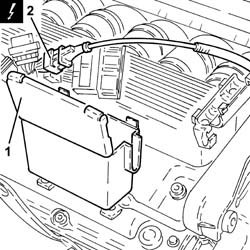
Applies to: engines: 3.2 V6; all production periods
1. Loosen the bands fixing the inlet ducts to the air chamber.
2. Loosen the band securing the engine oil vapour recovery pipe to the air chamber.
3. Disconnect the electrical connection from the throttle body integrated with the D.V.L.
| Name | Connector |
|---|---|---|
3 | Throttle body actuator |
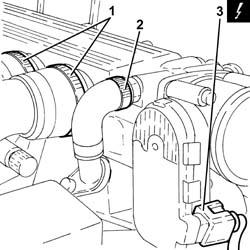
Applies to: engines: 3.2 V6; all production periods
1. Undo the fixing bolt (1a) and disconnect the earth lead (1b) from the air capacity chamber.
| Name | Connector |
|---|---|---|
1b | Earth on engine |
2. Undo the bolt fixing the reinforcement strut to the support on the engine for the reaction rod.
3. Undo the bolts (3a) and remove the air chamber (3b).
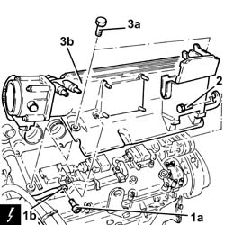
Applies to: engines: 3.2 V6; all production periods
1. Undo the bolts (1a) and remove the intake pipes (1b) complete with hoses (1c).
2. Remove gaskets.
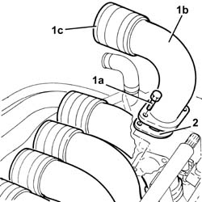
Applies to: engines: 3.2 V6; all production periods
1. Disconnect the electrical connections from the right cylinder head injectors.
| Name | Connector |
|---|---|---|
1 | Injector |
2. Disconnect the electrical connections from the right cylinder head ignition coils.
| Name | Connector |
|---|---|---|
2 | Ignition coil |
3. Undo the bolts (3a) and move the electrical wiring (3b) aside.
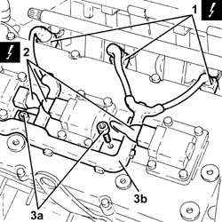
Applies to: engines: 3.2 V6; all production periods
1. Undo the bolt (1a) and release the cam angle sensor (1b) from its housing.
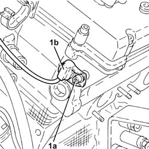
Applies to: engines: 3.2 V6; all production periods
1. Undo the bolts (1a) and remove the ignition coils (1b) from the right cylinder head.
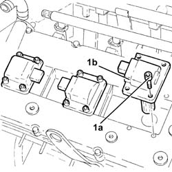
Applies to: engines: 3.2 V6; all production periods
1. Disconnect the electrical connection from the coolant temperature sensor.
| Name | Connector |
|---|---|---|
1 | Engine temperature sender unit |
2. Open the electrical connections box cover.
3. Release the electrical connections and the wiring from the connector box.
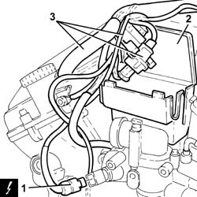
Applies to: engines: 3.2 V6; all production periods
1. Undo the bolts (1a) and remove the thermostat (1b) complete with connector box (1c).
2. Remove the adaptor.
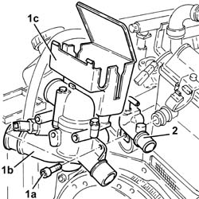
Applies to: engines: 3.2 V6; all production periods
1. Disconnect the electrical connection for the knock sensor flywheel side.
| Name | Connector |
|---|---|---|
1 | Knock sensor - 2 |
2. Disconnect the electrical connection for the rpm sensor.
| Name | Connector |
|---|---|---|
2 | RPM sensor |
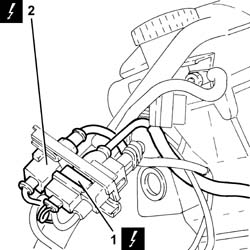
Applies to: engines: 3.2 V6; all production periods
1. Undo nut (1a) and disconnect earth lead (1b) from the left cylinder head.
| Name | Connector |
|---|---|---|
1b | Earth on engine |
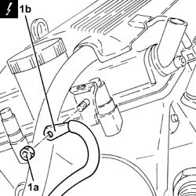
Applies to: engines: 3.2 V6; all production periods
1. Undo the bolts (1a) and remove the left cylinder head ignition coils cover (1b).
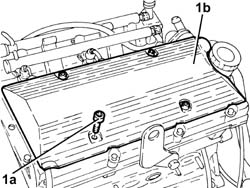
Applies to: engines: 3.2 V6; all production periods
1. Disconnect the electrical connections from the left cylinder head injectors.
| Name | Connector |
|---|---|---|
1 | Injector |
2. Disconnect the electrical connections from the left cylinder head ignition coils.
| Name | Connector |
|---|---|---|
2 | Ignition coil |
3. Undo the bolts (3a) and move the electrical wiring (3b) aside.
4. Remove the engine wiring.
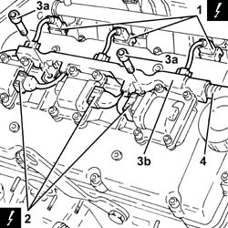
Applies to: engines: 3.2 V6; all production periods
1. Undo the bolts (1a) and remove the ignition coils (1b) from the left cylinder head.
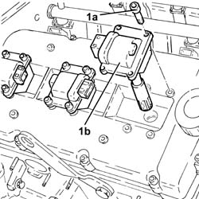
Applies to: engines: 3.2 V6; all production periods
1. Disconnect the rapid connector for the fuel manifold pipes.
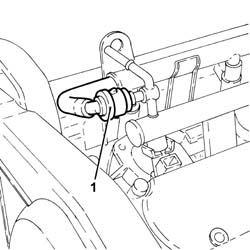
Applies to: engines: 3.2 V6; all production periods
1. Undo the bolts (1a) and remove the upper protective timing cover (1b).
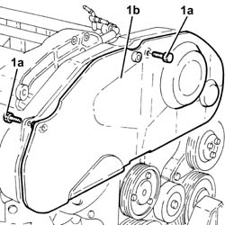
Applies to: engines: 3.2 V6; all production periods
1. Undo the bolts (1a) and remove the lower protective timing covers (1b).
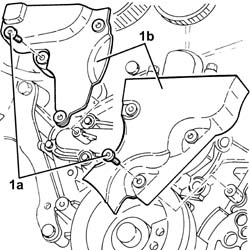
Applies to: engines: 3.2 V6; all production periods
1. Loosen the bolts fixing the timing belt moving tensioner.
2. Release the timing drive belt from the driven pullies.
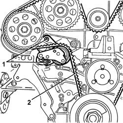
Applies to: engines: 3.2 V6; all production periods
1. Undo the bolt fixing the left rear timing belt protective cover to the right cylinder head.
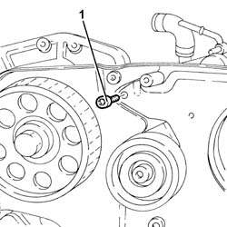
Applies to: engines: 3.2 V6; all production periods
1. Undo the bolts (1a), the bolt (1b) and remove the bracket (1c).
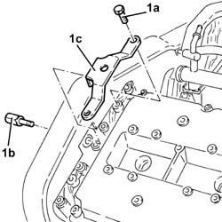
Applies to: engines: 3.2 V6; all production periods
1. Undo the bolt fixing the power assisted steering pump.
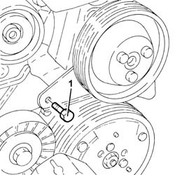
Applies to: engines: 3.2 V6; all production periods
1. Undo the bolts (1a) and remove the tappet cover for the left cylinder head (1b), complete with gasket.
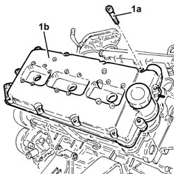
Applies to: engines: 3.2 V6; all production periods
1. Undo the bolts (1a) fixing the driven pullies using the tool (1b) for counter-torque.
 | Name | Country |
|---|---|---|
1b | Counter-torque | 1.822.146.000 |
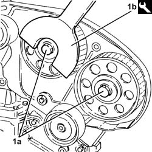
Applies to: engines: 3.2 V6; all production periods
1. Remove the driven pullies (1a) using the tool (1b).
| Name | Country |
|---|---|---|
1b | Extractor | 1.860.954.001 |
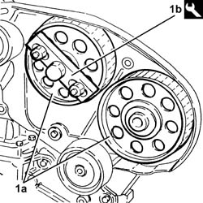
Applies to: engines: 3.2 V6; all production periods
1. Undo the bolts (1a) and remove the timing belt fixed tensioners (1b).
2. Undo the bolts (2a) and remove the left rear protective timing cover (2b).
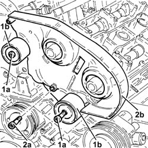
Applies to: engines: 3.2 V6; all production periods
1. Undo the nuts (1a) fixing the left cylinder head using the tool (1b).
| Name | Country |
|---|---|---|
1b | Spanner | 1.822.121.000 |
Remove the left cylinder head and gasket.
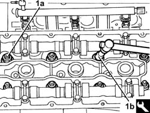
Applies to: engines: 3.2 V6; all production periods
1. Undo the bolts (1a) and remove the right rear protective timing cover (1b).
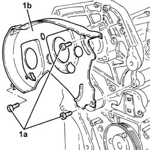
Applies to: engines: 3.2 V6; all production periods
1. Undo the bolts (1a) and remove the right cylinder head tappet cover (1b), complete with gasket.
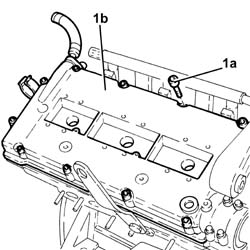
Applies to: engines: 3.2 V6; all production periods
1. Undo the bolts (1a) and remove the alternator bracket (1b).
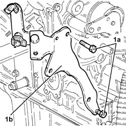
Applies to: engines: 3.2 V6; all production periods
1. Undo the nuts (1a) fixing the right cylinder head using the tool (1b).
| Name | Country |
|---|---|---|
1b | Spanner | 1.822.121.000 |
Remove the right cylinder head and gasket.
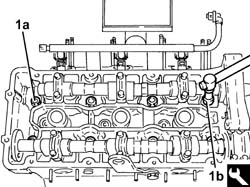
Applies to: engines: 3.2 V6; all production periods
1. Fit the cylinder/bore locks.
| Name | Country |
|---|---|---|
1 | Liner/bore holder | 1.820.279.000 |
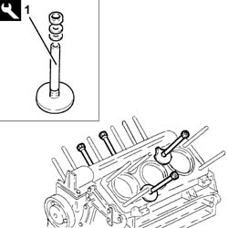
Applies to: engines: 3.2 V6; all production periods
Refitting
Removing1. Carry out a preliminary check on the camshaft timing: fit a spanner in the special opening (1a) in the centre of the camshafts and rotate them until the reference marks (1b) on the actual shafts coincide with the cylinder head upper surface.
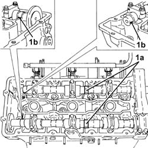
Applies to: engines: 3.2 V6; all production periods
1. Remove the camshaft caps 4 and 7 from the left cylinder head.
2. Remove the camshaft caps B and G from the right cylinder head.
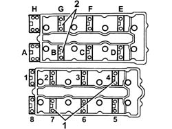
Applies to: engines: 3.2 V6; all production periods
1. Position the timing templates in place of the camshaft caps removed.
| Name | Country |
|---|---|---|
1 | Gauge | 1.870.849.000 |
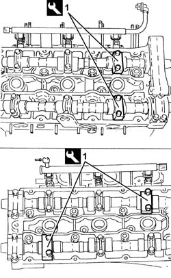
Applies to: engines: 3.2 V6; all production periods
Remove the bore/liner locks.
| Name | Country |
|---|---|---|
- | Liner/bore holder | 1.820.279.000 |
Position the cylinder head centering bushes on the cylinder block/crankcase.
1. Position the new cylinder head gaskets (1a), taking care to fit the lubrication duct seals (1b) (two for each cylinder head).
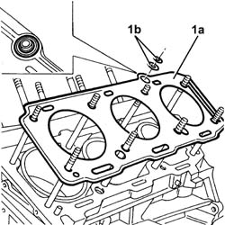
Applies to: engines: 3.2 V6; all production periods
Position cylinder no. 1 at T.D.C. before fitting the cylinder heads on the cylinder block/crankcase.
Position the cylinder heads on the cylinder block/crankcase.
1. Tighten the nuts (1a) fixing the cylinder heads to the recommended torque using the angular tightening tools (1b) and (1c).
 | Fastening | Component | Ø | Value (daNm) |
|---|---|---|---|---|
1a | Nut | CYLINDER HEAD | M12 | (Engine crankcase side) 2.4 ÷ 2.6 + 228 ÷ 232 |
| Name | Country |
|---|---|---|
1b | Protractor | 1.860.942.000 |
| Name | Country |
|---|---|---|
1c | Spanner | 1.822.121.000 |
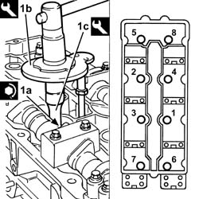
Applies to: engines: 3.2 V6; all production periods
Refit the alternator bracket in its seating and fix it using the bolts.
Place the rear protective timing covers back in their housings and secure them using the bolts.
1. Place the timing belt fixed tensioners (1a) back in their housings and secure them tightening the bolts (1b) to the recommended torque.
| Fastening | Component | Ø | Value (daNm) |
|---|---|---|---|---|
1b | Bolt | FIXED TENSIONER | M10 | (Cylinder head side) 4.5 ÷ 5.5 |
2. Place the driven toothed pullies (2a) back in their housings and secure them without tightening the bolts (2b).
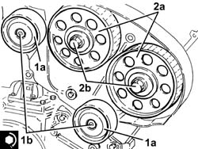
Applies to: engines: 3.2 V6; all production periods
Tighten the bolt fixing the left rear timing belt protective cover to the right cylinder head.
1. Fit the tool (1a), complete with dial gauge (1b), in the housing of the spark plug for cylinder no. 1.
| Name | Country |
|---|---|---|
1a | Fitting tool | 1.821.225.000 |
Rotate the crankshaft, using small movements (in both directions), until the piston for cylinder no. 1 is at T.D.C. at the power stroke.
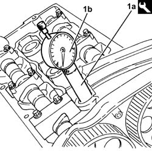
Applies to: engines: 3.2 V6; all production periods
1. Fit the timing drive belt starting from the drive pulley and continuing in an anti-clockwise direction, making sure that the drive sections are firmly taut.
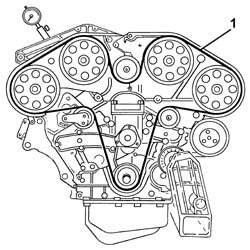
Applies to: engines: 3.2 V6; all production periods
1. Fit the tool (1a) and secure it with the bolt (1b) to the alternator bracket and with the bolt (1c) to the water pump.
| Name | Country |
|---|---|---|
1a | Belt tensioner | 1.860.950.000 |
2. Act on the nut (2a) for the belt tensioner tool until the moving reference on the belt tensioner (2b) is under the fixed reference.
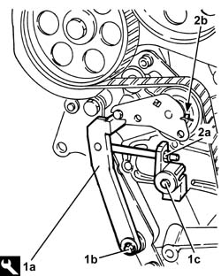
Applies to: engines: 3.2 V6; all production periods
1. Tighten the bolts (1a) fixing the driven pullies to the recommended toruqe using the tool (1b) for counter-torque.
| Fastening | Component | Ø | Value (daNm) |
|---|---|---|---|---|
1a | Bolt | TIMING GEAR DRIVEN PULLEYS | M12 | (Camshaft side) 7.2 ÷ 8.8 |
| Name | Country |
|---|---|---|
1b | Counter-torque | 1.822.146.000 |
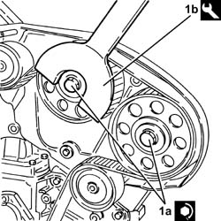
Applies to: engines: 3.2 V6; all production periods
Remove the tools for timing the camshafts.
| Name | Country |
|---|---|---|
- | Gauge | 1.870.849.000 |
Place the camshaft caps back in their housings in place of the tools removed and tighten the bolts to the recommended torque.
| Fastening | Component | Ø | Value (daNm) |
|---|---|---|---|---|
- | Bolt | CAMSHAFT CAPS/ | M8 | (Cylinder head side) 1.8 ÷ 2.0 |
Rotate the crankshaft through two revolutions in its direction of rotation to allow the timing belt to bed in.
1. Check that the moving reference on the timing belt moving tensioner lines up with the fixed reference.
2. If the references do not line up, slightly discharge the tensioner acting on the tensioning tool nut and make sure that the references are aligned.
3. Tighten the bolts for the moving tensioner to the recommended torque.
| Fastening | Component | Ø | Value (daNm) |
|---|---|---|---|---|
3 | Bolt | MOBILE TIMING TENSIONER | M8 | (Cylinder head side) 1.9 ÷ 2.3 |
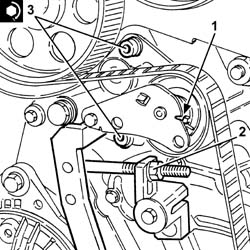
Applies to: engines: 3.2 V6; all production periods
Remove the belt tensioner tool.
| Name | Country |
|---|---|---|
- | Belt tensioner | 1.860.950.000 |
1. Place the cylinder head tappet covers (1a) complete with gaskets back in their housings and secure them tightening the bolts (1b) to the recommended torque.
| Fastening | Component | Ø | Value (daNm) |
|---|---|---|---|---|
1b | Bolt | CAM COVERS | M7 | (Cylinder head side) 1.4 ÷ 1.7 |
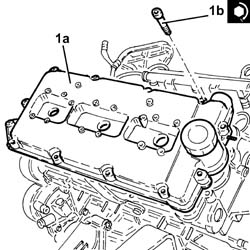
Applies to: engines: 3.2 V6; all production periods
1. Tighten the power steering pump bolt to the specified torque.
| Fastening | Component | Ø | Value (daNm) |
|---|---|---|---|---|
1 | Bolt | POWER STEERING PUMP | M8 | (Support side) 2.3 ÷ 2.8 |
2. Place the bracket (2a) back in its housing and secure it using the bolt (2b) and the bolts (2c).
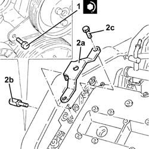
Applies to: engines: 3.2 V6; all production periods
Place the lower protective timing covers back in their housings and secure them using the bolts.
Fit the upper protective timing gear cover and fix it using the bolts.
Connect the rapid connector for the fuel manifold pipes.
1. Place the ignition coils (1a) back in their housings on the left cylinder head and secure them tightening the bolts (1b) to the recommended torque.
| Fastening | Component | Ø | Value (daNm) |
|---|---|---|---|---|
1b | Bolt | IGNITION COIL/REEL | M6 | (Tappet cover side) 0.8 ÷ 1.0 |
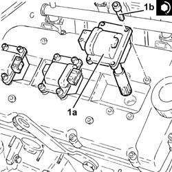
Applies to: engines: 3.2 V6; all production periods
Place the engine wiring back in its housing.
Place the electrical wiring back in its housing and fasten it using the bolts.
Connect the electrical connections to the left cylinder head ignition coils.
Connect the electrical connections to the left cylinder head injectors.
Fit the ignition coils cover in the housing on the left cylinder head and fix it using the bolts.
Connect the earth lead to the left cylinder head and secure using the nut.
Connect the electrical connection for the knock sensor flywheel side.
Connect the electrical connection for the rpm sensor.
1. Place the connector back in its housing.
2. Place the thermostat (2a) back in its housing and secure it tightening the bolts (2b) to the recommended torque.
| Fastening | Component | Ø | Value (daNm) |
|---|---|---|---|---|
2b | Bolt | THERMOSTAT | M6 | (Cylinder head side) 0.8 ÷ 1.0 |
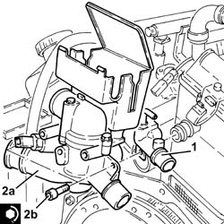
Applies to: engines: 3.2 V6; all production periods
Place the wiring and the connections in the connection box, then close the cover.
Connect the electrical connection to the water temperature sensor.
1. Place the ignition coils (1a) back in their housing on the right cylinder head and secure them tightening the bolts (1b) to the recommended torque.
| Fastening | Component | Ø | Value (daNm) |
|---|---|---|---|---|
1b | Bolt | IGNITION COIL/REEL | M6 | (Tappet cover side) 0.8 ÷ 1.0 |
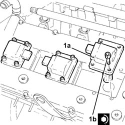
Applies to: engines: 3.2 V6; all production periods
1. Plact the cam angle sensor (1a) back in its housing and secure it tightening the bolt (1b) to the recommended torque.
| Fastening | Component | Ø | Value (daNm) |
|---|---|---|---|---|
1b | Bolt | CAM ANGLE SENSOR | M6 | (Cylinder head side) 0.7 ÷ 0.8 |
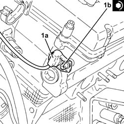
Applies to: engines: 3.2 V6; all production periods
Place the electrical wiring back in its housing and fasten it using the bolts.
Connect the electrical connections to the right cylinder head ignition coils.
Connect the electrical connections to the right cylinder head injectors.
1. Place the intake manifolds (1a), complete with hoses (1b) and gaskets (1c) back in their housings and tighten the bolts (1d) to the recommended torque.
| Fastening | Component | Ø | Value (daNm) |
|---|---|---|---|---|
1d | Bolt | INLET MANIFOLD | M6 | (Intake manifold side) 0.6 ÷ 0.9 |
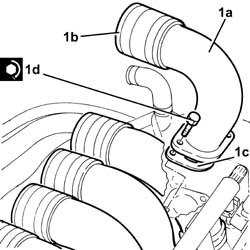
Applies to: engines: 3.2 V6; all production periods
Place the air chamber back in its housing and secure it using the bolts.
Tighten the bolt fixing the reinforcement strut to the support on the engine for the reaction rod.
Connect the earth lead to the air chamber and secure it using the bolt.
Connect the electrical connection to the throttle body integrated with the D.V.L.
Tighten the band fastening the engine oil vapour recovery pipe to the air chamber.
Tighten the bands fixing the inlet ducts to the air chamber.
Connect the electrical connection for the detonation sensor, timing side.
Close the electrical connection box cover.
Proceed with refitting 1004D40 engine - position on stand and remove .
Topics linked from this page (9)
- 1004D40 engine - position on stand and remove
- A30 Ignition coil (cyl. 1)
- C40 Earth on engine ( ENGINE )
- K36 Engine temperature sender unit
- K46 RPM sensor
- K50 Detonation sensor - 1
- K51 Knock sensor - 2
- N70 Injector (cyl. 1)
- N75 Throttle body actuator